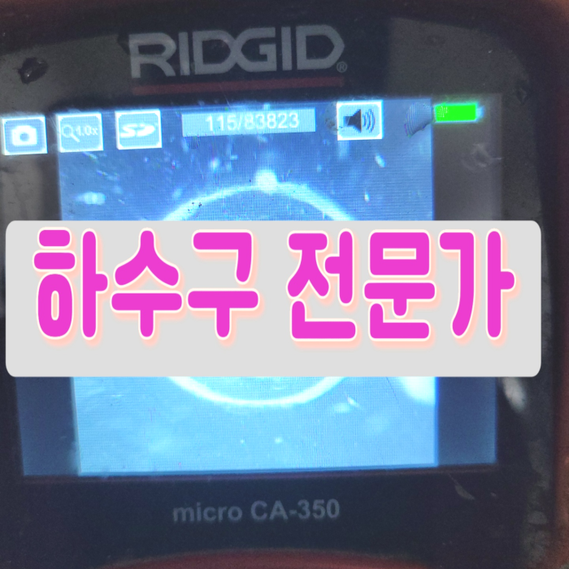
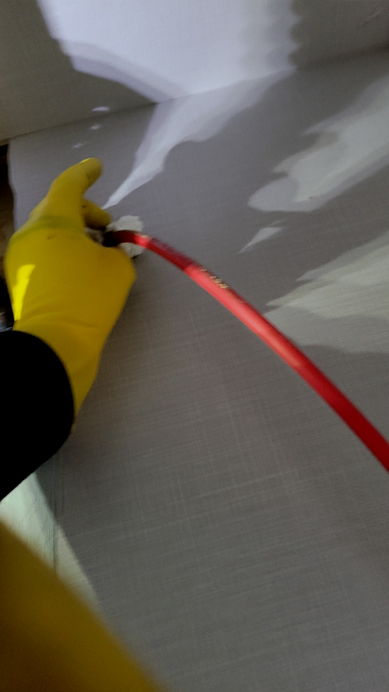
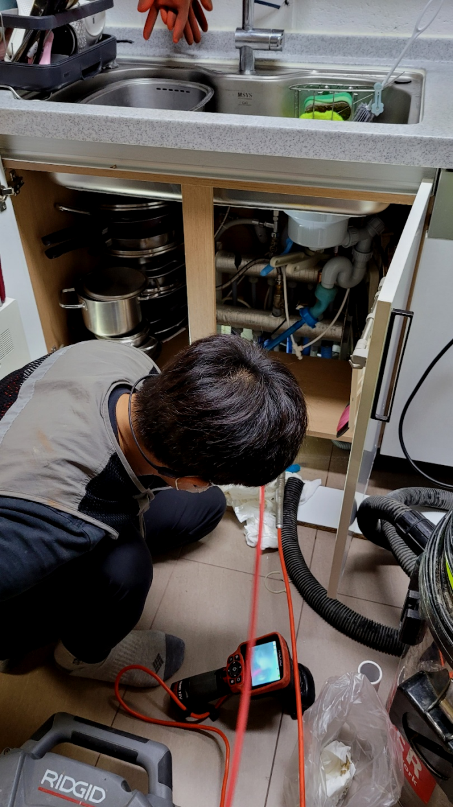
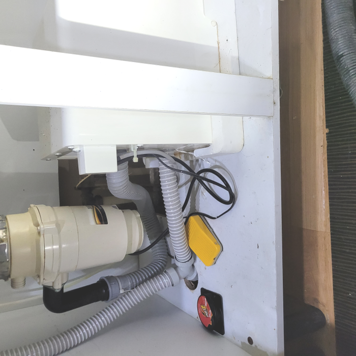
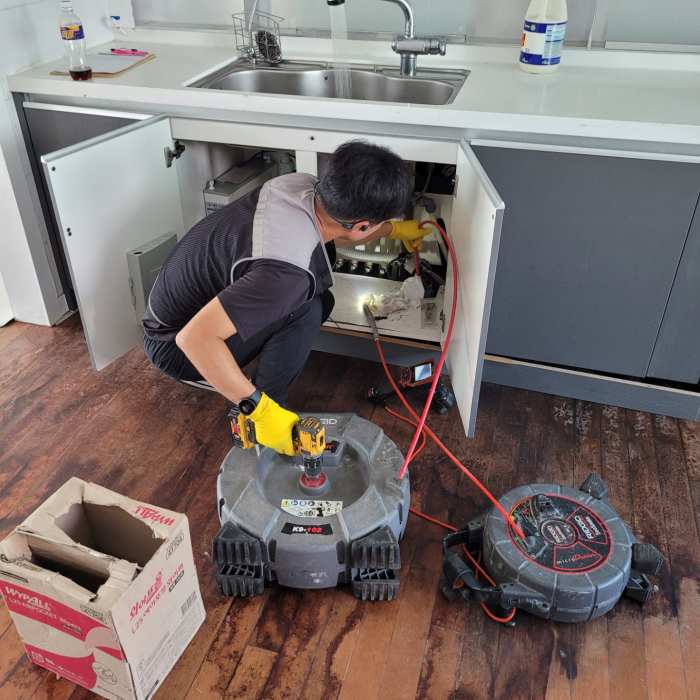
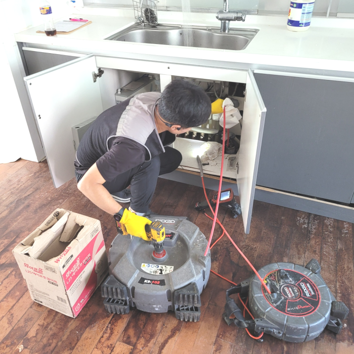
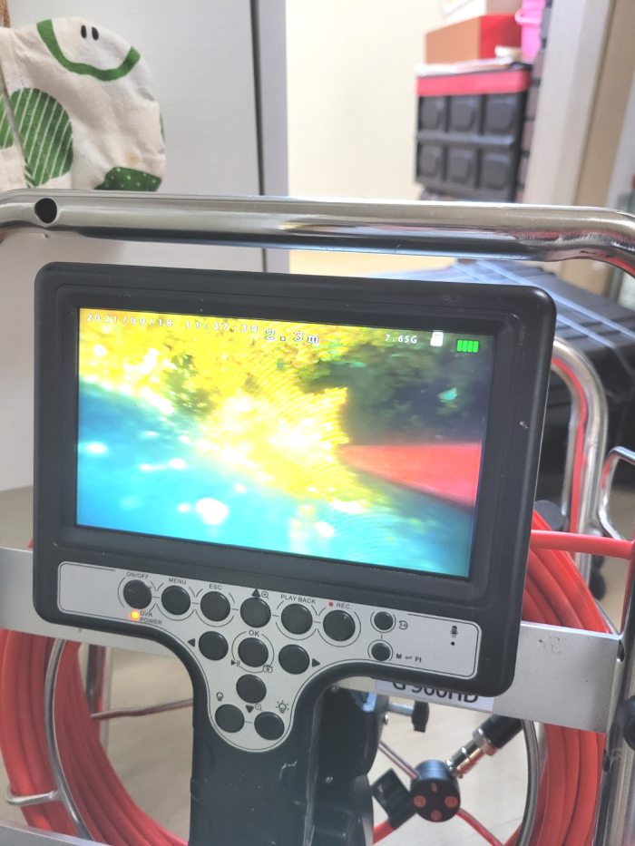

🏠 수원 고등동 싱크대배수관막힘 매산동 하수구수리 배관설비
수원 싱크대막힘 전문 시공 후기

📋 작업 개요
- 위치: 수원
- 서비스 유형: 싱크대막힘, 변기막힘, 하수구막힘, 배관막힘, 역류해결, 뚫는업체, 배관청소, 고압세척
- 작업 일시: 2023. 12. 15. 14:29
- 업체명: 하수구수사대 (010-5615-2118)
🔍 문제 상황
반갑습니다!
설비전문업체 "하수구수사대"를 찾아주셔서 감사합니다^^
고객님께서 퇴수구 문제가 발생하시면, 저희에게 상담을 요청하시면, 최신 기술을 활용하여 빠르고 효율적으로 처리해드리겠습니다. 현장 리뷰를 통해 업체의 전문성과 높은 신뢰도를 확인하실 수 있습니다. 더불어, 퇴수구배관 문제뿐만 아니라 건물 전체의 배관 상태까지 유연하게 확인하며 최적의 해결책을 제시해드립니다.
수원 고등동 싱크대배수관막힘 매산동 하수구수리 배관설비

🔎 원인 분석
💡 전문가 진단: 수원 고등동 싱크대배수관막힘 매산동 하수구수리 배관설비
하수도막힘의 원인을 해결하기 위한 단계로는 먼저 배관 내부에 쌓여있는 이물질들을 제거하기 위해서 청소작업을 진행하게 되었는데요. 저희는 많은 장비를 보유하고 있기 때문에 배관 내부의 상황에 맞는 장비를 이용해서 작업을 하게 됩니다.
배수관막힘이 심각한상태에선 물만막힌것이아니라 되려솟구쳐오를까봐 조급함만느낄수있습니다. 생각대로 진행이안되면 귀한집내부로 배수관물이 침입하게되는 끔찍한일이생깁니다. 거기다답답한부분은 물을 사용하면 넘치기때문에 상수도이용자체가 전혀안된다는거죠.
고압세척 장비는 저희와 같은 전문 업체를 통해서 사용을 할 수 있어서 보다 확실한 해결을 할 수 있게 됩니다. 배출구막힘을 배관 내시경을 이용해서 내부의 상황을 보면서 고압세척을 하였는데요. 메인 배관이다 보니 배관의 길이도 길고 중간에 다시 이물질이 고이지 않도록 하는 작업이 필요했습니다.
공간이 협소하다면 오랜 기간의 실력을 겸비한 전문가가 반드시 있어야 해요. 그렇게 해야지만 더 이상의 하수막힘이 없어요. 물길만 내어주면 것에 필요 없는 지출은 이제 그만하시고 꼼꼼하게 깨끗하게 근본적인 원인을 해결해 보세요.
물을 사용하는데 배출되지 않으면 이용 자체가 어려워지죠. 발견하자마자 뚫어주지 않으면 악취 등의 문제들로 인해 답답해지기만 한데요. 하수관 존재 자체를 느끼고 있지는 않지만 항상 우리 주위에 존재하고 있답니다.

🔧 작업 과정
완전하게 배출구막힘과 악취가 올라오는 원인을 해결하기 위해서는 이 상황을 확실하게 제거해야 했지요. 그냥 방치한다면 이 위로 이물질들이 계속해서 쌓이게 되면서 배출구막힘이 해결되지 않고 더 악화될 것이기 때문입니다.
이번에 퇴수구 배관 상태를 살펴보니 일부 구간만 막혀있는 것이 아니었습니다. 대부분의 경로에서 이물질이 쌓여서 슬러지를 이루고 있는 것을 확인할 수 있었는데요,
오직 배출구뚫어버리는것만 하지않고 트랩을설치하거나 큰작업까지도 일상에서 중요한 전부를해드리고있어요.배출구문제를 혼자서하시기 어려우시면 저희팀에게 의뢰하시면돼요 복잡한현장이라도 열의를다해 뚫어드리고있어요.
대부분은 심하게막힌것이 아니면 기본금액으로 수리할수있지만 낙후된하수도이거나 엄청나게깊숙한곳까지 찌꺼기가쌓여있다면 상황이복잡해지기때문에 추가금액이 발생됩니다
하루빨리 하수관뚫는것이 하나밖에없는 대책이란것을 기억하셔야됩답니다.최첨단기계와 많은전문지식을 갖추어진분들로 모여있어서 어디든지 확실하게수리 할수있어요!
어떠한것보다 문제가발생하면 사용할수없어서 평소에생활이 불편해집니다.배관역류를 안해야하지만 그렇게안된다면 상태가심각해집니다.
저희 포스팅을 읽으시는 고객님들도 아시겠지만, 그동안 소개 드린 출동 사례 또한 매우 다양하기에 이를 바탕으로배수막힘 상담 연락을 주신다면 빠르고 친절한 상담 도와드리겠습니다.
공휴일에 막히기라도 하면 대다수의 분들이 발등에 불이 떨어져 배수관 안에 이상한 물건들을 넣고 휘젓는다거나 빠뜨려 버리시는 등의 예측 불가능한 행동으로 상황을 더욱 악화시켜 버리는 경우가 많습니다.


✅ 작업 완료
저희는 1년 365일 배관 청소를 진행하고 있기 때문에 혹시나 평일, 주말 언제라도 배출관 배관에 문제가 생겼을 경우 전화 한 통 주시면 달려가 해결해 드리고 기본적인 비용 안내에 대해서는 유선으로 문의해 보세요!
#하수구막힘 #하수구뚫음 #하수구역류 #씽크대막힘 #싱크대역류 #오수관막힘 #하수구청소 #욕실하수구막힘 #변기막힘 #하수구뚫는비용 #싱크대수리 #화장실막힘




⚠️ 주방 싱크대 배관 막힘 예방 수칙
- ✅ 기름기가 묻은 식기나 프라이팬은 설거지 전 키친타올로 반드시 기름때를 닦아내세요.
- ✅ 주기적으로 싱크대 개수대에 뜨거운 물을 가득 받아 한 번에 내려 배관 내부 기름을 씻어내세요.
- ✅ 배수구 거름망을 미세한 필터로 사용하시고 음식물 찌꺼기가 틈으로 새어 들지 않게 관리하세요.
- ✅ 베이킹소다와 식초를 뜨거운 물과 함께 일주일에 한 번씩 부어주면 배관 살균과 막힘 예방에 좋습니다.
💡 핵심 정리
- 확실한 장비 작업(내시경 점검 및 샤프트 스케일링)으로 원인을 뿌리 뽑습니다.
- 작업 후 1년 이내에 동일한 부위 재발 시 100% 무상 A/S 서비스를 보장합니다.
- 서울 · 경기 · 인천 전 지역에 24시간 언제든 긴급 출동할 수 있도록 항시 대기 중입니다.
❓ 자주 묻는 질문 (FAQ)
🚨 수원 싱크대막힘 문제로 고민이신가요?
정확한 원인 진단과 확실한 시공으로 재발 없는 해결을 약속드립니다.
24시간 긴급 출동 | 서울 · 경기 · 인천 전지역 | 1년 내 재발 시 무상 A/S